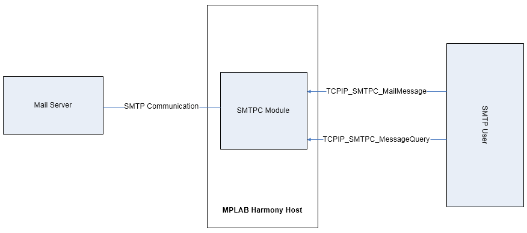

1.2.1.18 SMTPC Module
The SMTPC module in the TCP/IP Stack lets applications send e-mails to any recipient worldwide. These message could include status information or important alerts. Using the e-mail to SMS gateways provided by most cell phone carriers, these messages can also be delivered directly to cell phone handsets.
Note: The SMTPC client supports encrypted communication with the mail server by using the Networking Presentation layer to integrate an external encryption services provider (usually wolfSSL) for TLS support.
Abstraction Model

Library Interface
| Name | Description |
|---|---|
| Macros | |
| SMTPC_CONFIG_H | This is macro SMTPC_CONFIG_H. |
| TCPIP_SMTPC_CLIENT_ADDR_BUFFER_SIZE | size of a buffer that can hold an email address: user@domain.smth |
| TCPIP_SMTPC_CLIENT_AUTH_BUFFER_SIZE | size of a buffer that can hold the 2* username and password |
| TCPIP_SMTPC_CLIENT_MESSAGE_DATE | default string that identifies the SMTPC client mail date Currently there is no date/time service available The mail server will update with the current date Keep the current data/time format that's accepted by the SMTP servers |
| TCPIP_SMTPC_INTERNAL_RETRY_TIMEOUT | The retry interval because of a SMTPC temporary error, in seconds. These include temporary errors related to: DNS, socket connection, TLS. |
| TCPIP_SMTPC_MAIL_CONNECTIONS | number of mail connections (sockets) to be created each mail message requires a mail connection adjust based on the number of simultaneous mail messages in transit |
| TCPIP_SMTPC_MAIL_RETRIES | How many times to retry sending a mail message Retries occur only for server reported transient errors or for internal temporary errors (DNS, socket errors, etc.) |
| TCPIP_SMTPC_PLAIN_LINE_BUFF_SIZE | size of an email line when sending the email body as plain text SMTP lines are recommended to be 78 chars long and MUST not exceed 998 characters! This implementation limits the line size to TCPIP_SMTPC_PLAIN_LINE_BUFF_SIZE (usually 256 or 512). So any mail line longer that this size will have inserted an artificial end of line sequence (CRLF) after this many characters. |
| TCPIP_SMTPC_SERVER_DATA_TIMEOUT | server acknowledgment of the mail data: body, attachments et all; seconds Should be adjusted according to the server responsivity RFC specifies it as 10 min Default is 1 minute, which should normally be enough |
| TCPIP_SMTPC_SERVER_REPLY_BUFFER_SIZE | size of the RX buffer for processing the server replies Usually the server replies are not very long so a 512 bytes buffer will normally do |
| TCPIP_SMTPC_SERVER_REPLY_TIMEOUT | general server response timeout, seconds Should be adjusted according to the server responsivity RFC specifies it as 5 min Default is 1 minute, which should normally be enough |
| TCPIP_SMTPC_SERVER_TRANSIENT_RETRY_TIMEOUT | The retry interval because of a server transient error, in seconds. RFC specifies it should be at least 30 min! |
| TCPIP_SMTPC_SKT_RX_BUFF_SIZE | Define the size of the RX buffer for the SMTPC socket Use 0 for default TCP socket value The SMTPC RX does not need high throughput so the default value is usually fine. |
| TCPIP_SMTPC_SKT_TX_BUFF_SIZE | Define the size of the TX buffer for the SMTPC socket Use 0 for default TCP socket value The SMTPC TX does not need high throughput so the default value is usually fine. For transferring large files increase this value as needed. |
| TCPIP_SMTPC_TASK_TICK_RATE | SMTPC task rate, milliseconds The default value is 55 milliseconds. The lower the rate (higher the frequency) the higher the module priority and higher module performance can be obtained The value cannot be lower than the TCPIP_STACK_TICK_RATE. |
| TCPIP_SMTPC_TLS_HANDSHAKE_TIMEOUT | the timeout for the TLS handshake to complete, seconds when a secure connection is established to the mail server Adjust based on the processing speed, key size, etc. |
| TCPIP_SMTPC_USE_MAIL_COMMAND | Use the sample tcpip console "mail" command for sending email from the console |
| Functions | |
| TCPIP_SMTPC_MailMessage | SMTPC mail message function. |
| TCPIP_SMTPC_MessageQuery | SMTPC mail message query function. |
| TCPIP_SMTPC_Task | Standard TCP/IP stack module task function. |
| Data Types and Functions | |
| TCPIP_SMTPC_ATTACH_BUFFER | Buffer attachment to the mail. |
| TCPIP_SMTPC_ATTACH_FILE | File attachment to the mail. |
| TCPIP_SMTPC_ATTACH_TYPE | SMTPC attachment type |
| TCPIP_SMTPC_ENCODE_TYPE | SMTPC encoding type |
| TCPIP_SMTPC_MAIL_FLAGS | Mail message flags |
| TCPIP_SMTPC_MAIL_MESSAGE | Mail message descriptor. |
| TCPIP_SMTPC_MESSAGE_CALLBACK | Defines a mail message callback |
| TCPIP_SMTPC_MESSAGE_HANDLE | Defines a handle to a mail message |
| TCPIP_SMTPC_MESSAGE_QUERY | Structure defining a run time query for a mail message |
| TCPIP_SMTPC_MESSAGE_REPORT | Structure defining a mail message report |
| TCPIP_SMTPC_MESSAGE_RESULT | SMTPC result code |
| TCPIP_SMTPC_MESSAGE_STATUS | SMTPC message status |
| TCPIP_SMTPC_MESSAGE_WARNING | SMTPC warning type |
| TCPIP_SMTPC_MODULE_CONFIG | SMTPC configuration data. |
| TCPIP_SMTPC_SERVER_REPLY_CALLBACK | Defines a mail server reply callback |
| __SMTPC_H | This is macro __SMTPC_H. |